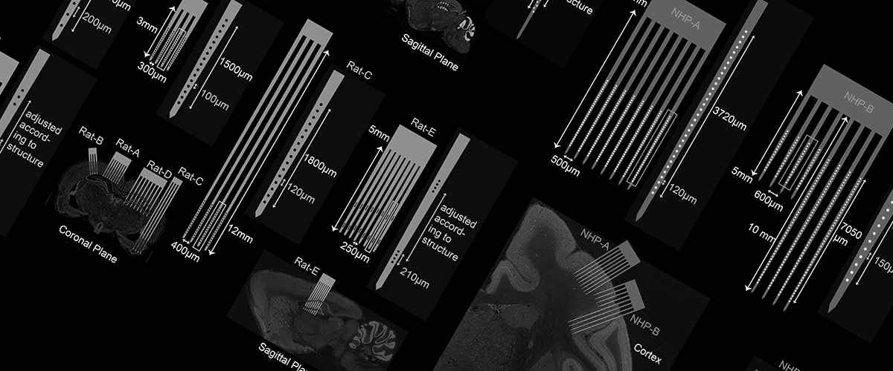

Song Lab Github
Matlab and Python source code of input-output models for analyzing neural systems.

Flexible Polymer Multielectrode Array Resource
Our multi-institutional collaborative team, supported by the National Institutes of Health BRAIN Initiative (Award U01NS126046), seeks to enable the broad adoption of flexible polymer multielectrode arrays (pMEA) as neural interfaces by the neuroscience user community.

Polymer Implantable Electrode (PIE) Foundry
A technology resource funded by the NIH BRAIN Initiative (Award U24NS113647), dedicated to providing MEA tools and training for neuroscientists.

On Memory Neurotechnologies
An interactive article on technologies for restoring memory function—and how you can help design them.

Brains@Play
A spin-off company from the lab that develops Open Web tools for neuroscience research and education